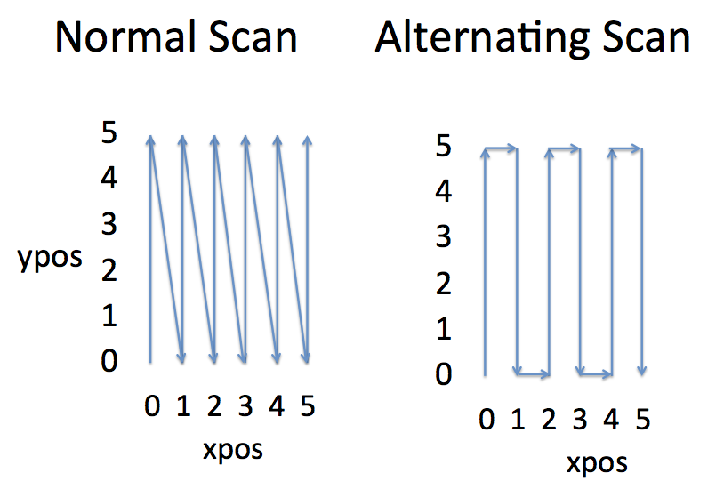
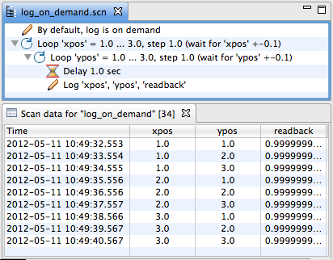
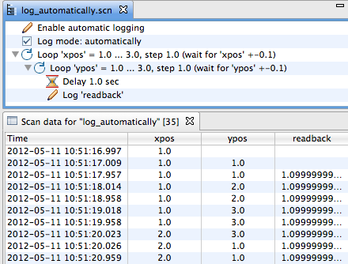
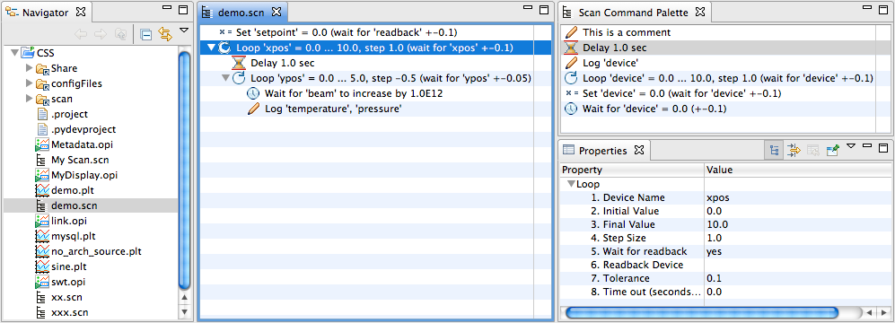
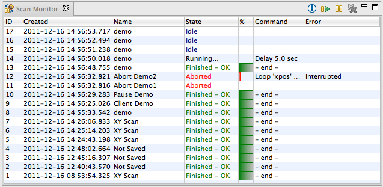
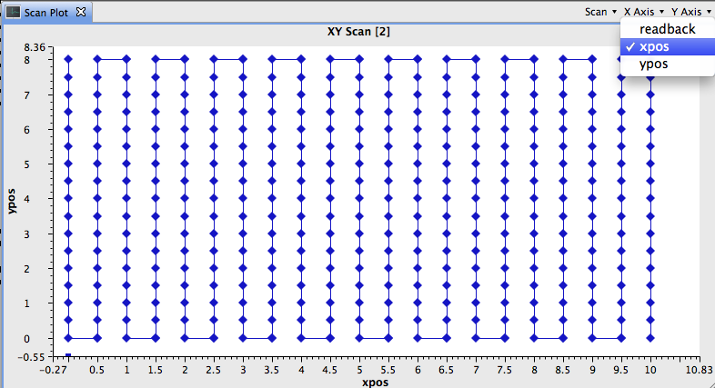
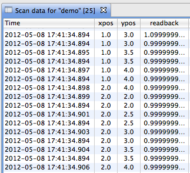

The scan system can automate experiments. For example, it can move a motor from some start position to an end position in certain steps, waiting at each step until experiment data has been taken.
A scan can consist of several nested loops. For example, at each step of moving the "horizontal" position of a sample, an inner loop can vary the "vertical" position of the sample to perform a 2-dimensional scan of the sample surface. As another example, an outer loop may vary the sample temperature while inner loops vary the sample position.
It is important to understand that the scan system uses separate tools to define a scan, to execute a scan and to monitor it:
This design allows scans to execute even if the original control system panel has been closed. Scans can be monitored, paused or aborted independent from the computer that submitted the scans.
The scan system includes a simple logging system that can for example log the position of motors that are operated by a scan. By monitoring this log, you can track the progress of running scans, or verify the operation of completed scans by inspecting their saved log data.
To add samples to the log, you place Log Commands in your scan. The Log Mode commands can further influence how samples are logged.
To view logged data, use the Scan Plot or Scan Data Display.
The scan log is not a complete data acquisition system but a tool to monitor the progress of a scan. Commands in a scan can instruct a data acquisition system to start taking data, or to stop data acquisition at the end of a scan. This way, the scan system can interact with a data acquisition system, but each can also be used independently: You can automate an experiment without acquiring data, or acquire data while manually operating the experiment.
The picture above shows a scan with two nested loops as it would appear in the Scan Editor. What follows is a description of all available commands.
This command sets a device to a desired value.
In addition to sending the desired value to the device, it can also wait for the device or an associated read-back device to actually reach the desired value.
Properties:
Example:
Set 'setpoint' = 1.0
will write the value 1.0 to the "setpoint" device.
Set 'setpoint' = 1.0 (wait for 'readback' +-0.1, 10.0 sec timeout)
will also write the value 1.0 to the "setpoint" device.
In addition to the previous example the command will wait up to 10 seconds
for the "readback" device to reach the value of 1.0 with a tolerance of 0.1,
that is a value within 0.9 and 1.0.
Set 'setpoint' = 1.0 with completion in 10.0 sec
will write the value 1.0 to the "setpoint" device, and wait for the confirmation to be returned by the device.
This can be useful for EPICS motor records, where it should indicate that the motor has finished moving.
Set 'setpoint' = 1.0 with completion in 10.0 sec (wait for 'readback' +-0.1, 10.0 sec timeout)
combines the last two examples:
A value is written to the "setpoint" device, waiting for confirmation.
Then, the command waits for the associated "readback" to match.
The timeout is applied to both steps, so the today time out in this case could be 20 seconds.
This command waits for a device to reach a desired value.
The Set command described above already contains similar functionality, but it can only wait for a device to reach the absolute value to which it has been commanded. The separate wait command can be used to wait for a different value, or to wait for a device to increase or decrease by a certain value.
Properties:
Examples:
Wait for 'readback' = 1.0 (+-0.1)
will wait until the value of the "readback" device reaches the value 1.0+-0.1,
i.e. is within the range of 0.9 ... 1.1.
Because of rounding errors and control system noise you should never
set the tolerance to 0.0 for the equality ('=') check,
because your device might never reach the exact desired value.
Configure a small tolerance like 0.001 to allow for rounding errors.
Wait for 'readback' > 5.0
will wait until the value of the "readback" device
is above 5.0.
Wait for 'readback' to increase by 5.0
will wait until the value of the "readback" device
increases by 5.0.
Assuming that the value was 10.0 when we reached this
wait command, the value would have to grow to at least
15.0 for the wait command to finish.
This command changes a device from a start to an end value. It is at the core of most scans.
Properties:
Example:
Loop 'xpos' = 0.0 ... 5.0, step 1.0
will set the "xpos" device to 0.0, then 1.0, 2.0, 3.0, 4.0, 5.0.
At each step it will execute the "body" of the loop.
Loops can count "up" as well as "down". A loop from 0 to 5 in steps of 1 will operate as just mentioned. A loop from 5 to 0 in steps of -1 will assume values 5, 4, 3, 2, 1, 0. When specifying a step direction that does not match the loop direction, for example a loop from 0 to 5 in steps of -1, the loop will have a special behavior: It will toggle its direction each time it is executed. This can be useful for nested loops that are intended to scan a surface, as shown in the diagram below:
The normal scan displayed in the left diagram was executed with nested loops
Loop 'xpos' = 0.0 ... 5.0, step 1.0
Loop 'ypos' = 0.0 ... 5.0, step 1.0
The alternating scan displayed to the right was executed with nested loops
Loop 'xpos' = 0.0 ... 5.0, step 1.0
Loop 'ypos' = 0.0 ... 5.0, step -1.0
causing the inner loop on "ypos" to alternate direction each time is is executed. If these "xpos" and "ypos" devices are for example connected to stepper motors, the alternating scan will be faster and reduce wear on the motors.
Include another *.scn file in a scan.
Properties:
Example:
Include 'other.scn', macro1=value1,macro2=value2
will include the scan defined in other.scn and execute it with the given macros.
The path to the scan file must either be a complete path within the file system, or - preferably - a file in one of the directories listed in the scan server search path preference.
Macros specified in an include command are added to the existing macros. Macros of the same name as existing macros replace their value.
Send values of devices to the log.
Properties:
Example:
Log 'ypos', 'readback'
will send the current value of the "ypos" and "readback"
devices to the log.
All devices listed in the same log command will be logged with the same "serial number" identifier to make it obvious that they were taken at the same time, even though their underlying time stamps obtained from the control system may differ because a value could for example have changed some time ago and was not modified since.
This command can change the log mode.
Properties:
Example:
Log Mode: automatically
changes the default, on-demand mode of logging to the automatic log mode.
In the default, on-demand log mode, you can log the current value of devices as desired by adding Log Commands to the scan. You control exactly which device is logged and when. Below is an example scan and the resulting log. Note that there is one line of data for each iteration of the nested loop.
When enabling the automatic log mode, commands that modify the values of devices will automatically log the value. For example, the Set and Loop Commands will write the value of their associated device after they set and optionally waited for them to reach the desired value. In automatic logging mode, you only need to add specific Log commands to your scan if you want to log additional devices which are not directly modified by the scan, for example temperature sensors or other read-back values.
The automatic log mode may appear more convenient than the on-demand mode, but consider the following example scan and the resulting data as viewed in a table:
When the outer loop sets the "xpos" to 1, that is logged automatically, but at that time we have not, yet logged a value for anything else, so the initial table line in the data log only shows "xpos". When a few milliseconds the inner loop sets the "ypos" to 1, that is also logged, and now the data log shows the previous value for "xpos" with the "ypos", but no "readback", yet. About a second later, the "readback" is logged specifically, and finally we see all of "xpos", "ypos" and "readback" in the log.
Similarly, consider the log around 10:51:20.02. At this time, the outer loop advances "xpos" to 2 and then the inner loop reserts "ypos" to 1. These events happen at virtually the same time, but since the two loops log them automatically with their exact time stamp, they appear as two different events in the log table.
In summary, the default, on-demand log mode is usually most straight-forward to use. It results in a compact data log that contains exactly what you want to see, for example one line of data within the inner loop of a nested scan. The automatic loop can provide more detail because it logs each change right away when a set or loop command modifies a device.
This command can execute Jython script code inside the scan server. The script code can read the scan log and the devices used by the scan. It can also write to devices, and add data to the scan log. A typical use would be simple data fitting or alignment: Analyze the log data that the scan has accumulated, perform a fit, add the fit data to the log for later review, and position devices to for example a 'peak' located in the fit.
Properties:
__init__Example:
Script 'MyScriptClass'
will use the MyScriptClass class.
The script that defines the class MyScriptClass must
be in a file named myscriptclass.py,
i.e. using lower case version of the class name.
The scan server searches for scripts in a list of directories
that is configured via its plugin customization file.
All script classes must derive from the ScanScript class, refer to its Javadoc for details.
Example:
# ScriptCommand class that fits a gaussian shape to pos and signal,
# then moves pos to the center of the fit
from org.csstudio.scan.command import ScanScript
from numjy import *
class MyScript(ScanScript):
def __init__(self, pos_device, sig_device):
self.pos_device = pos_device
self.sig_device = sig_device
def getDeviceNames(self):
"""Return Device (alias) names used by the script
Scan scripts that intend to access devices
need to list their names.
This allows the scan system to connect to the
required devices before starting the scan.
The default implementation returns an
empty list, meaning that the script cannot
access any 'live' devices.
Only data that the scan has logged by the time
when the script is invoked will be available.
"""
return [ self.pos_device, self.sig_device ]
def run(self, context):
"""Invoked by the scan server to execute the script.
Context parameter allows access to logged data, devices, ...
"""
# Turn raw python array into ndarray for easier math
data = array(context.getData(self.pos_device, self.sig_device))
x = data[0]
y = data[1]
# Determine centroid
center = sum(x * y) / sum(y)
print "Center: ", center
# Other parameters...
m = max(y)
print "Max: ", m
width = sqrt( abs(sum((center-x)**2*y)/sum(y)) )
print "Width: ", width
# Compute fit
fit = m*exp(-(x-center)**2/(2*width**2))
print fit
# Log the 'fit' data for later comparison with raw data
context.logData("fit", fit.nda)
# Set PVs with result
context.write(self.pos_device, center)
While the script command can be very powerful, it can also be dangerous
because errors in the script are beyond the control of the scan server.
A script can not be paused like other scan commands, but scans with script
commands can still be aborted.
To debug a command script, print statements in the script
can be viewed on the scan server console.
The use of script commands should be limited to well-tested and reusable scripts. Rapidly changing scripts can be executed on the client side. They can submit scans to the server, fetch the result, perform computations, submit follow-up scans and so on.
This command simply delays the scan for a configurable number of seconds.
Properties:
Example:
Delay 1.0 sec
will delay the scan for 1 second.
Note that you should avoid using the delay command. It is usually a bad idea to simply wait for a fixed amount of time, hoping that the experiment reached a desired state, for example a certain temperature or a certain amount of beam exposure.
If the temperature is already at the desired value before the delay expires, you have wasted time. If the beam should turn off, a simply delay will not notice this.
Instead of a delay, try to use the "Wait" command to wait for the desired state, for example for a readback to indicate the desired temperature, or for a beam current measurement device to indicate a certain amount of beam exposure.
The Scan Editor is a graphical editor for scan configurations. It shows the hierarchical structure of loops in a scan.
Basic Operation:
CSS/Scan/Scan Editor, or open
existing *.scn scan file
*.scn file
via the menu File/Save.
Device names as for example used in the Set or Loop commands can use macros.
Instead of specifying a complete device name like
"motor_x", macro expressions like "$(device)" or "motor_$(axis)"
may be used, which would evaluate to the same "motor_x" if
the macros were defined as follows:
device=motor_x, axis=x
Macros can be defined in the scan server preferences. They can also be provided in the IncludeCommand.
The Scan Monitor displays the current state of the Scan Server.
Access the scan monitor via the menu CSS/Scan/Scan Monitor
It lists which scans have been submitted to the server and their state:
The context menu and the toolbar buttons can be used to pause or abort the Running scan, and to remove completed scans from the server, i.e. scans that have either finished or have been aborted.
The Scan Plot can be used to track the progress of a scan. Data for devices that are "logged" is accessible to the plot.
Access the scan plotmonitor via the menu CSS/Scan/Scan Plot
Selectors in the toolbar of the plot allow selection of the following:
The Scan Data Display can be used to track the progress of a scan similar to the plot, but it displays the data as a table.
Open the data display from the Scan Monitor
by right-clicking on the desired scan and selecting Open Scan Data Display.
You can save the displayed data to a file via the menu File/Save As
or via the context menu of the data display table.
The format of the generated file depends on the file extension:
Scan commands can fail: A Set or Loop Command may not be able to write to a device, or there may be a time-out while waiting for the read-back to match the written value. In fact such errors are almost to be expected. The Scan Server will not quit when one of its commands experiences an error. Instead, it will by default abort the affected scan, and continue to run the next submitted scan.
In some cases it can be useful to change the default behavior by specifying a specific error handler:
Example error handlers:
from org.csstudio.scan.command import ScanErrorHandler
class OnErrorContinue(ScanErrorHandler):
def handleError(self, command, error, context):
print "Ignoring error from " + str(command)
return ScanErrorHandler.Result.Continue
from org.csstudio.scan.command import ScanErrorHandler
class OnErrorRetryThenAbort(ScanErrorHandler):
def __init__(self):
# Initialize the number of retries
self.retries = 3
def handleError(self, command, error, context):
self.retries -= 1
if self.retries > 0:
print "Retrying " + str(command) + " " + str(self.retries) + " more times ..."
return ScanErrorHandler.Result.Retry
else:
return ScanErrorHandler.Result.Abort
The scan server is a program that executes submitted scans. There is typically one scan server instance per beam line.
When multiple scans are submitted, they are executed in the order of submission. If a user submits a scan while the scan server is still executing a scan, this will not impact the ongoing scan. The new scan is simply queued for execution after the current scan finishes. This also allows users to plan ahead, submitting scans for several experiment runs in advance, and the scan server will then execute them one after the other.
Users do not directly interact with the scan server. They use the Scan Editor or beamline-specific user interface panels to submit scans. Users can monitor the progress via directly monitoring the temperature, sample position or other experiment properties affected by the scan, or use the Scan Monitor to track the progress of a scan and potentially pause or abort it.
The scan server is maintained by a system administrator, it should for example run as a Linux service and thus always be available. End users can submit scans to the scan server, monitor their progress and also abort scans, but end users will typically not start or stop the scan server itself.
End users may have to know the host where the scan server is running
so that they can connect to the scan server from scripts,
or verify their CSS preference settings.
The CSS menu Edit/Preferences/Scan shows
the host name and port number for connecting to the scan server,
and scripts use Java properties ScanServerHost
and ScanServerPort for the respective settings.
The scan server itself if configured via a plugin customization file, review the one included in the server for an example.
The scan server maintains the log. By default this is stored in a relational database (Derby). The storage location of the database as well as optional network access via JDBC or Derby tools is configured in the server's plugin customization file.
The preferred way of accessing the log is via the network API
of the scan server.
For maintenance, see Readme.txt in the plugin org.csstudio.scan.log.derby.
The network communication between the scan server and clients like CSS is based on a RESTful web interface.
ScanServerPort.
For the CSS client GUI, this can be set via an Eclipse preference
which then (on CSS startup) sets the system property.
If not configured, the default port is 4810.
ScanServerHost or, for the CSS GUI, the associated
Eclipse preference.
Documentation for the REST web interface is available by pointing a web browser to the web URL of the scan server, for example http://localhost:4810/index.html.
The scan server can also update PVs with basic status information.
The base name of these PVs is configured via the scan server preferences.
The PVs must be made available by an IOC on the network, for example using
the examples/scan.db.
The scan server will update the following PVs:
To allow access to a scan server through firewalls, the TCP port described in the previous section needs to be opened for access by clients. The default is 4810.
A key feature of the scan system is that scans can be submitted from various sources:
This provides a lot of options to programmers. At the same time, the details can be hidden behind for example a 'BOY' operator interface panel, so even users with no programming experience can then configure and execute scans for common beamline tasks that have prepared interface panels.
For details refer to the examples and the Java documentation